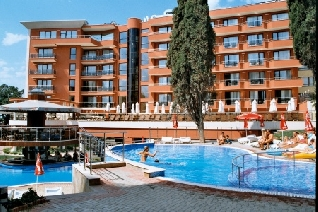

|
|
Хотел Несебър Маре **** | |
| Сол Несебър Маре е един от трите хотела от комплекса Сол Несебър Ризорт. Хотелският комплекс се намира между с. Равда и гр. Несебър и е разположен на 100 м. от плажа. Заобиколен е от обширна градина и парк. От хотела се открива прекрасна гледка към морето и с. Равда. | ||
| стая 2 легла: 160лв | 0888-00000000 | |
|  | Хотел Виго **** | |
| Хотел Виго предлага стаи, студия и апартаменти под наем (Room Only) с прекрасна морска панорама. Намира се на първа линия в новата част на град Несебър. Разположен е в непосредствена близост до красивия градски парк, до морето и само на 50 метра от Южния плаж, също така на пешеходно разстояние от Стария град на Несебър. | ||
| стая 2 легла: 59лв | 0899-0099999 | |

|
Хотел Несебър Палас **** | |
| Сол Несебър Палас е най-луксозният от трите хотела в комплекса Сол Несебър Резорт. Хотелският комплекс се намира между с. Равда и гр. Несебър и е разположен на 100 м. от плажа. Заобиколен е от обширна градина и парк. От хотела се открива прекрасна гледка към морето и с. Равда. Сол Несебър Палас Ви предлага една незабравима почивка в модерния си и удобен комплекс, много спортни атракциони и кътчета за отмора, релаксация и разкрасяване. | ||
| стая 2 легла: 155лв | 0772-60000000 | |